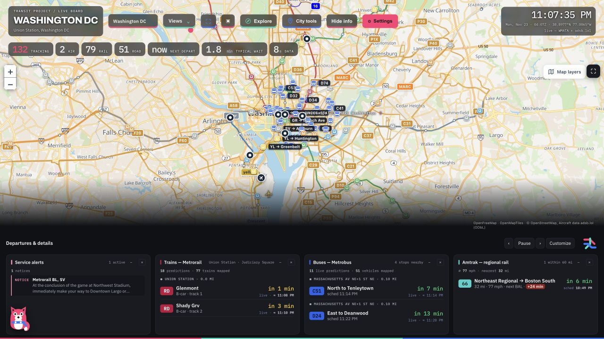

Projector & planetarium
Your city after dark
Explore 13 city skylines, or project the stars and moon onto your ceiling.
Explore projector views
Washington, DC
Track trains, buses, and aircraft on one live board. Explore your city from a browser, a TV, or a spare tablet.
Open the Washington board
Projector & planetarium
Explore 13 city skylines, or project the stars and moon onto your ceiling.
Explore projector viewsFind local stops worth visiting, follow a two-stop outing, and collect stamps.
Find your cityChoose a city and view, then follow the setup for AirPlay, Chromecast, or a TV browser.
Set up your screen02 The city directory
Choose a city to open its live board.
03 Bring your city online
Use hardware you already own. Customize your view. Let the city do the moving.
Open a board to explore its map, nearby departures, and aircraft. No installation required.
Choose a city ↗Set your location. Choose your panels, theme, and design. Each city remembers its own setup.
One board. Your way.Give a tablet, TV, laptop, or Raspberry Pi a new purpose. Bookmark your board and leave it running.
Set up your display ↗04 Beyond the board
Follow a flight. Scan the whole network. Log a sighting. There’s more than one way to watch your city.
Every board above is fully usable right now. A license removes the evaluation notice, forever, on up to five devices.
05 System knowledge
The details behind the display.
A whole city. One screen.